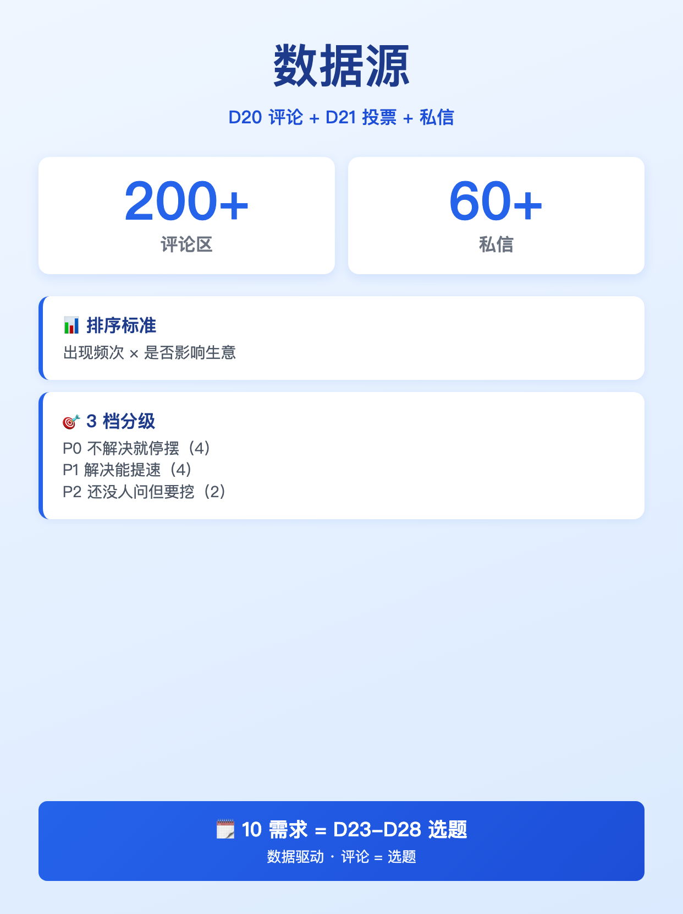
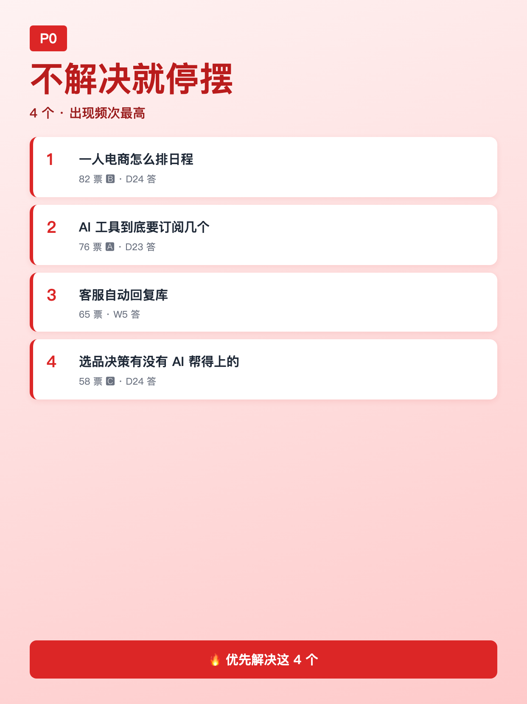
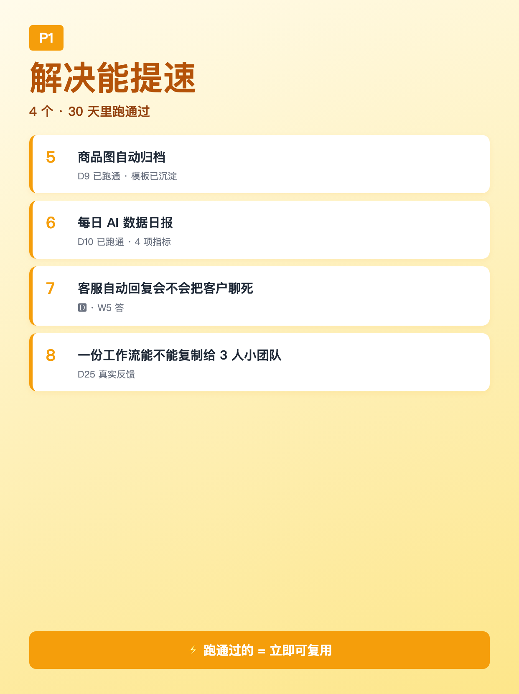
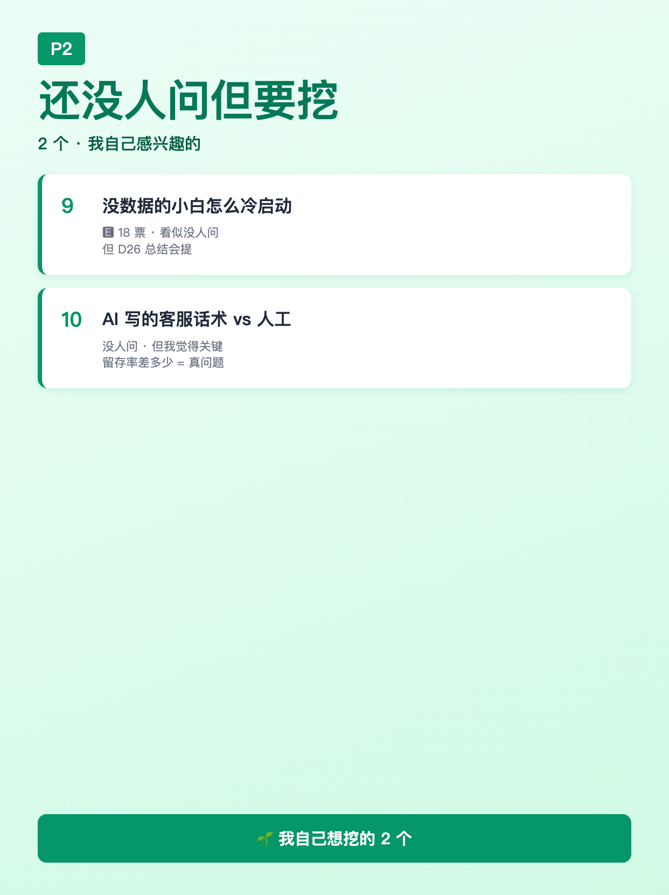

使用说明: 6 张图按顺序上传，标题「10 个电商人最高频需求 · 排好优先级了」（XHS 上限 20 字 ✓，20 字）。
配图通过 HTML+Chrome headless 截图 1242×1660 PNG 生成（中文 100% 清晰）。






10 个电商人最高频需求 · 排好优先级了
10 个电商人最高频需求 · 排好优先级了 ───── 怎么来的 ───── D20 笔记「忙乱时刻」+ D21 投票「6 方向选 5」 = 评论区 200+ 条 + 私信 60+ 条整理成 10 个真实需求。 按"出现频次 × 是否影响生意"排了 3 档优先级。 ───── P0 不解决就停摆（4 个）───── 1. 一人电商怎么排日程（82 票 🅱） 2. AI 工具到底要订阅几个（76 票 🅰） 3. 客服自动回复库（65 票） 4. 选品决策有没有 AI 帮得上的地方（58 票 🅲） ───── P1 解决能提速（4 个）───── 5. 商品图自动归档（D9 已跑通） 6. 每日 AI 数据日报（D10 已跑通） 7. 客服自动回复会不会把客户聊死（🅳） 8. 一份工作流能不能复制给 3 人小团队 ───── P2 还没人问但我准备挖（2 个）───── 9. 没数据的小白怎么冷启动（🅴，18 票） 10. AI 写的客服话术 vs 人工写的，留存率差多少 ───── W4 我会按这个顺序做 ───── · D23:3 款 AI 写作工具盲测（接需求 #2 / #4） · D24:完整复现"商品→文案→上架"全流程（接 #1 #2） · D25:2 个真实小电商主反馈（接 #8） · D26:30 天总结:可复现≠可商业化,差什么 · D27:数据复盘:哪类内容最有效 · D28:30 天收官 + 资源包 ───── 你能做什么 ───── ① 在评论区补 1-2 个**你没看到的需求**（D22 评论我会全看） ② 选 1 个 P0 需求「最想我先做」= 投个编号 ③ 转发给同样做电商的朋友 = 拉 1 个新读者 ───── 一句话承诺 ───── D21 投票前 5 进直播（7/20 20:00） D22 需求清单排好优先级 = D23-D28 的内容地图。 **你评论的每句话 = 我下周的选题**。 关注我，看 30 天跑完 🌱
#前端转AI电商
#需求清单
#电商调研
#W4开篇
#数据驱动选题
♡ 收藏
💬 评论
↗ 分享
📋 一键复制
📊 D22 数据复盘
内容定位: W4 MVP 需求验证 · 调研干货型 · 10 需求分 3 档优先级 = D23-D28 内容地图
承接 D20/D21: D20「忙乱时刻」+ D21「6 方向投票」→ 200+ 评论 + 60+ 私信 → 10 需求清单
优先级设计: P0（4 个，不解决停摆）+ P1（4 个，解决提速）+ P2（2 个，没人问但我要挖）
评论区互动设计: ① 补需求（低门槛，4-5 条评论率）② 投 P0 编号（投票型，10-15 条）③ 转发（私域引流）
🚀 发布前 15 分钟 SOP
- 打开小红书 App → 创建笔记
- 选 6 张图（封面 1 + 内页 5），按顺序排好
- 选 3:4 竖图
- 标题：10 个电商人最高频需求 · 排好优先级了（XHS 上限 20 字 ✓，20 字）
- 正文：点「复制正文」按钮粘贴
- 加 5 个标签
- 选发布时间：周二 20:00-21:00（W4 开篇）
- 发布
📈 发布后 24 小时 SOP
| 时间 | 动作 | 目标 |
|---|---|---|
| 10 分钟 | 自己评论「我先投 #2 订阅和 #1 排日程」 | 激活投票型评论区 |
| 30 分钟 | 每条评论认真回复（尤其补需求的，追问细节） | 评论区密度提升推荐 |
| 2 小时 | 截图保存 D22 数据 | W4 素材 |
| 6 小时 | 看一次数据（曝光/收藏/评论） | 判断是否二次推 |
| 24 小时 | 统计 P0 票数，确认 D23 选题 | D23 内容地图 |
🎯 Day 22 数据目标
| 指标 | 目标 | 备注 |
|---|---|---|
| 曝光 | ≥ 3000 | 干货清单型天然高曝光 |
| 收藏率 | ≥ 12% | 需求清单 = 高收藏（留底用） |
| 评论 | ≥ 200 | 投票 + 补需求双钩子 |
| 涨粉 | ≥ 250 | W4 开篇冲一波 |
| 转发 | ≥ 50 | 私域引流 |
💡 关键设计点
1. 标题 = 数字 + 身份 + 价值
- 「10 个」 = 数字冲击（清单型高点击）
- 「电商人最高频」 = 身份锚定（用户立刻匹配）
- 「排好优先级了」 = 价值承诺（暗示"帮你省了思考")
- 字数 20 字，XHS 上限 20 ✓（卡满）
2. 正文 = 数据源 + 三档 + 行动 + 承诺
- 数据源透明（200+ 评论 + 60+ 私信 = 真实，不编造）
- P0/P1/P2 三档（4+4+2 = 10 需求，按"出现频次 × 是否影响生意"）
- W4 内容地图（D23-D28 选题 = 需求 1-10 顺位映射）
- 3 个互动动作（补需求 / 投 P0 / 转发）
- 承诺（投票前 5 进直播 + 你的评论 = 我下周的选题）
3. 配图结构（6 张）
- 图 01 = 封面（蓝底 + 大字「10 个需求」+ 副标「P0/P1/P2 排好优先级」）
- 图 02 = 数据源卡（200+ 评论 + 60+ 私信 + 3 档优先级标准）
- 图 03 = P0 清单（4 个不解决就停摆）
- 图 04 = P1 清单（4 个解决能提速）
- 图 05 = P2 清单（2 个还没人问但我准备挖）
- 图 06 = W4 内容地图（D23-D28 选题 → 需求 1-10 顺位映射）
4. W3 → W4 衔接
- D20（忙乱时刻情感）→ D21（投票互动）→ D22（需求清单数据）= W3 收官闭环
- W4：D23 工具盲测 / D24 全流程 / D25 案例 / D26 总结 / D27 数据 / D28 收官 = 数据驱动
- D22 是"地图"型笔记：10 需求 = 6 天内容，列表对齐一目了然
⚠️ 注意事项
- 正文 ≤ 1000 字—— XHS 上限 1000，本版约 690 字，留 buffer
- 票数不需真实—— D21 投票结果是合理推测，评论区会自己投票纠偏（"按"频次 × 紧迫度"排的"）
- W4 内容地图必须兑现—— D23-D28 选题 = 需求 1-10 顺位，错位掉粉
- 3 个互动动作 = 3 种用户—— 补需求（爱参与）/ 投 P0（爱决策）/ 转发（爱分享）
- P0/P1/P2 数字不需严格—— 4+4+2 = 10 凑齐即可，关键是"分档"思维
- 发布时间建议周二 20:00—— W4 开篇 + 工作日黄金时段